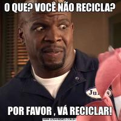

As vantagens da separação do lixo doméstico ficam cada vez mais evidentes. Grande parte dos resíduos sólidos gerados em casa pode ser reaproveitada, ajudando a aliviar os lixões e aterros sanitários lotados, chegando até eles apenas os rejeitos (restos de resíduos que não são reaproveitáveis). A reciclagem além de economizar recursos naturais, gera renda para os catadores, que coletam, separam, transportam, acondicionam e, às vezes, beneficiam os resíduos sólidos, transformando o que antes era visto como lixo em mercadoria, com valor de uso e de troca. Veja abaixo algumas dicas de como separar seu lixo.
Separar o lixo orgânico
O lixo orgânico é todo resto de alimento, como cascas de legumes, frutas, raízes, vegetais e folhas, entre outros tipos de resíduos de origem biológica. É preciso separar o lixo orgânico, mas melhor do que separar e embalar corretamente o lixo orgânico é praticar a reciclagem dos orgânicos em casa! Você já ouviu falar em compostagem? Ela é a reciclagem dos resíduos orgânicos (principalmente os alimentares) que evita a emissão de gases do efeito estufa pelo transporte até aterros e pela própria incorporação desses gases na matéria orgânica do húmus, produzindo um rico adubo natural. Por isso é importante não só separar, mas também reciclar o lixo orgânico no local em que ele foi produzido.
Higienize os materiais antes do descarte
A importância de separar o orgânico do reciclável já é bastante conhecida pela sociedade, embora ainda não seja totalmente praticada. Ainda assim, um ponto de extrema necessidade que é ignorado é a higienização do material antes do descarte. Além de ser um ato de respeito e empatia com as pessoas que os manuseiam, a limpeza é a garantia que aqueles materiais estão preparados para a reciclagem. Resíduos descartados sujos tornam-se impróprios para a reciclagem devido à contaminação por orgânicos. Após coletados, os materiais passam por uma triagem e depois uma lavagem de descontaminação. Somente resíduos aptos para a reciclagem passam por ela, o que significa que se o resíduo for descartado sujo nem chega nessa etapa.